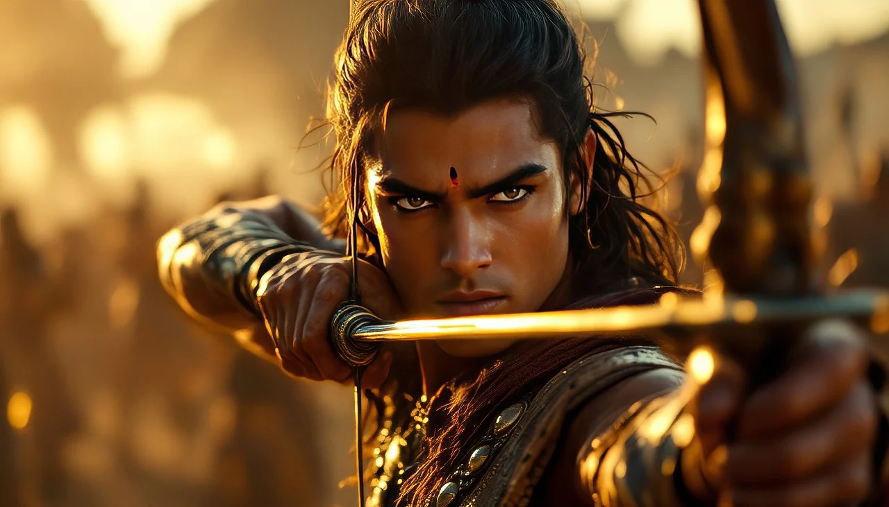
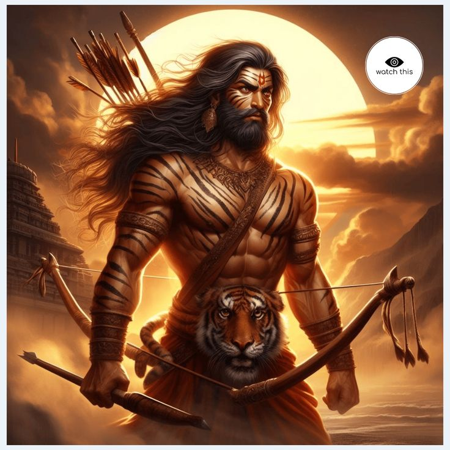
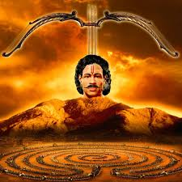

The Mahabharata is an ancient Indian epic, a timeless masterpiece
that captures the essence of life, duty, and the eternal struggle
between good and evil. Written by Sage Vyasa, it narrates the tale
of the Kuru dynasty, focusing on the epic battle of Kurukshetra
between the Pandavas and the Kauravas. Beyond the grand narrative of
war, the Mahabharata delves into themes of morality, sacrifice, and
destiny, offering wisdom that transcends generations. While many
know of the heroic deeds of Arjuna, the divine interventions of
Krishna, and the tragic fates of Karna and Bhishma, the Mahabharata
is much more than these familiar tales. Hidden within its vast folds
are countless intriguing and lesser-known stories—tales of forgotten
warriors, unsung sacrifices, mystical events, and complex
relationships.
These untold stories reveal the depth and intricacy of this epic,
showcasing its unparalleled richness. Join us on a journey to
explore these fascinating and often overlooked gems of the
Mahabharata, shedding new light on one of the greatest stories ever
told. These narratives go beyond the well-known tales of the
Kurukshetra war, delving into the lives, dilemmas, and wisdom of its
extraordinary characters. They remind us that the Mahabharata is not
just a story but a timeless reflection of human emotions and values.


Barbarika, the observer of the Mahabharata's great war
Story of Barbarika - The Warrior Who Could End the War in Moments
Imagine a warrior so powerful that he could end the greatest war in
history with just three arrows. This was Barbarika, a mighty yet
humble grandson of Bhima and the son of Ghatotkacha. His story is
one of immense power, unwavering principles, and a sacrifice that
saved the balance of dharma.
The Warrior's Unstoppable Power
Barbarika was blessed with three celestial arrows, gifted to him by
the goddess of the Naga clan.
first arrow marked all the targets that Barbarika wanted to
destroy.
The second arrow marked all the objects he wanted to spare.
The third arrow would destroy everything marked by the first and
spare those marked by the second—no exceptions.
With these arrows, Barbarika could single-handedly determine the
outcome of any battle. He was known as Teen Baan Dhaari (Bearer of
Three Arrows).
The Unwavering Pledge
As the Kurukshetra war loomed, Barbarika made a promise: "I will
always fight for the weaker side." This vow stemmed from his sense
of justice, but it posed a unique challenge.
The Divine Test
Lord Krishna, ever the strategist, decided to test Barbarika's
resolve. Disguised as a Brahmin, Krishna approached him and asked,
"With such power, whom will you support in the Kurukshetra war?"
Barbarika confidently replied, "I will fight for the weaker side, O
Brahmin." Krishna smiled knowingly and asked, "If you have the power
to destroy anyone, wouldn't your participation itself decide the
war? The stronger side would instantly become weaker after your
intervention. How will this uphold dharma?" The Sacrifice Krishna,
understanding the potential chaos Barbarika could unleash, gently
revealed his true form and requested Barbarika to offer his head as
a sacrifice. For the greater good, Barbarika agreed without
hesitation, saying, "If my death can protect dharma, I will gladly
accept it." Even after his head was severed, Barbarika's
consciousness remained alive due to his divine blessings. Krishna
placed his head on a hilltop, where Barbarika witnessed the entire
Kurukshetra war.
The Legacy of Barbarika
Barbarika is remembered as a symbol of humility and selflessness.
His story teaches that even the greatest power must bow before the
greater good. Today, he is worshipped as Khatu Shyam Ji in
Rajasthan, where devotees believe he fulfills their wishes and
protects them, just as he protected dharma on the battlefield.
Barbarika's tale reminds us of the fine balance between power and
responsibility and how true strength lies in sacrifice for the
greater good

Barbarika's head, the silent witness to Kurukshetra